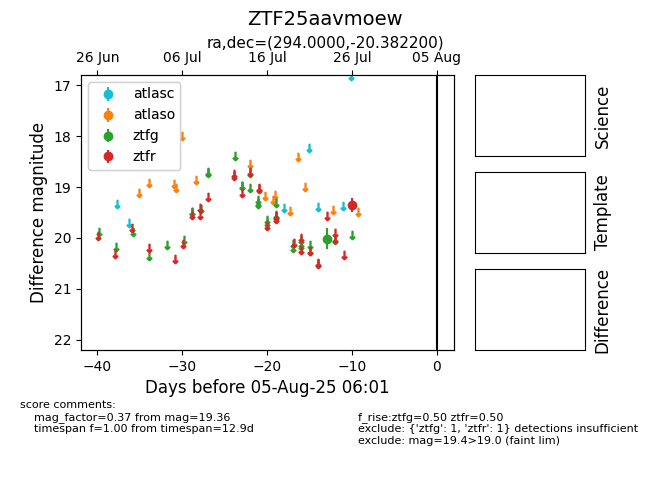

Target ZTF25aavmoew at 2025-08-05 23:02, see:
FINK: fink-portal.org/ZTF25aavmoew
Lasair: lasair-ztf.lsst.ac.uk/objects/ZTF25aavmoew
ALeRCE: alerce.online/object/ZTF25aavmoew
alt names
ZTF25aavmoew (ztf,fink)
coordinates:
equatorial (ra, dec) = (294.0000,-20.38220)
galactic (l, b) = (19.0455,-18.66316)
photometry
last ztfg=20.01, ztfr=19.36
1 ztfg, 1 ztfr detections
